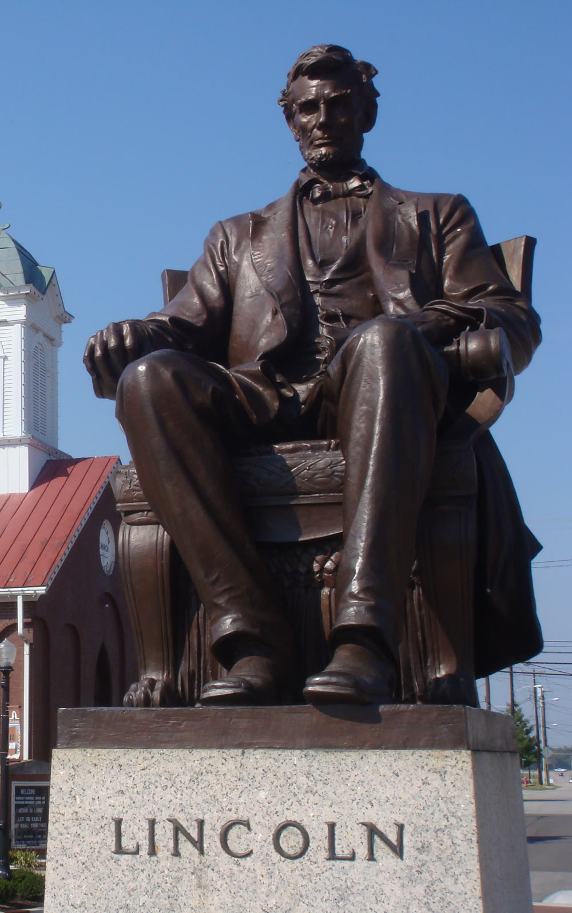

Hodgenville, LaRue County
Lincoln statue in Hodgenville

A bronze Abraham Lincoln has sat in the middle of Hodgenville's public square since its dedication on 31 May 1909. A.A. Weinman designed the 6-foot sculpture. It rests on a marble pedestal in front of the Lincoln Museum at 66 Lincoln Square, Hodgenville, Kentucky 42748. This is the town-square president, not the memorial building at the birthplace farm, and not the Boy Lincoln that faces it from across the square.
- Place
- Lincoln Square, the public square in downtown Hodgenville, LaRue County, KY 42748. Pin 37.57374, -85.74052.
- What you see
- A 6-foot bronze of Lincoln seated in an Empire-style chair. The marble base has a Greek fret band inlaid with stars. Bronze letters on the east side spell LINCOLN. The figure faces east.
- Sculptor and date
- A.A. Weinman. The National Register nomination lists him as Adolph Weinmann. Dedicated 31 May 1909, the centennial year of Lincoln's birth.
- Museum behind it
- The Lincoln Museum, 66 Lincoln Square. (270) 358-3163. Monday through Saturday 8:30 a.m. to 4:30 p.m. Sunday 12:30 p.m. to 4:30 p.m. Eastern Time.
The bronze on the square
Lincoln Square is the center of downtown Hodgenville's commercial historic district, itself a National Register place. The seated statue is its own National Register object, listed as the Abraham Lincoln Statue on the public square, a commemorative monument in public ownership. Less than an acre, it occupies a rectangular lot in the middle of the square. The bronze shows Lincoln seated in an Empire-style chair. The rectangular marble base carries a Greek fret band inlaid with stars, and bronze letters on the east facade spell LINCOLN. The statue faces east.
Visit Hodgenville describes a 6-foot sculpture on a marble pedestal, placed in front of the museum as a welcome for people coming into the historic downtown. A 2008 National Archives photograph shows the same seated figure in front of a brick church with a white tower, the name LINCOLN cut into the stone under his boots. The lot is a town square you can walk around. There is no ticket for the statue itself.
Why it went up in 1909
The centennial of Lincoln's birth gave LaRue County a reason to put a monument where visitors would see it. In 1904 the Kentucky Legislature created the Lincoln Monument Commission to plan a monument in Hodgenville. The commission chose a statue for the public square. The state appropriated five thousand dollars. Congress appropriated ten thousand.
The first idea was a copy of Augustus St. Gaudens's Lincoln in Chicago. That copy was never made. Adolph Weinmann, a former student of St. Gaudens, designed a new figure and worked on it for more than a year. The unveiling was 31 May 1909. More than 10,000 people came. Mrs. Ben Hardin Helm, Lincoln's sister-in-law, unveiled the bronze. Kentucky Governor A.E. Wilson accepted it for the Commonwealth. Lincoln's son, Robert Todd Lincoln, was there.
It was the first publicly funded monument to Lincoln in the county, and it is still on that original site. Local civic groups have looked after it since 1909. The same centennial year also started the birthplace memorial a few miles south: President Theodore Roosevelt laid that cornerstone on 12 February 1909, and President William Howard Taft dedicated John Russell Pope's building on 9 November 1911. The square got the seated president. The farm got the memorial and a cabin.
Lincoln's Kentucky years
Abraham Lincoln was born in Kentucky and left it as a boy. In the late fall of 1808 Thomas and Nancy Lincoln settled on Sinking Spring Farm. On Sunday, 12 February 1809, Abraham was born there in a one-room log cabin. The National Park Service marks that cabin as the start of the childhood that later carried him into the presidency and the Civil War. The farm sits south of Hodgenville. Its address now is 2995 Lincoln Farm Road.
The family stayed at Sinking Spring until Abraham was two, then moved to Knob Creek Farm, northeast of Hodgenville, along the Old Cumberland Trail, today's U.S. 31E. Thomas Lincoln leased land there in hope of getting Sinking Spring back. The farm covers 228 acres. The Lincolns lived on 30 of them. A younger brother, Thomas, was born at Knob Creek and died there. Abraham nearly drowned in the creek until a neighbor, Austin Gollaher, held out a branch and pulled him from the water. In December 1816, when Lincoln was almost eight, the family left for a homestead in Indiana, now the Lincoln Boyhood National Memorial.
Kentucky was more than the birthplace. Visit Hodgenville notes that the state was home to his parents, his wife, a best friend, and a political idol, and that those Kentucky ties stayed with him after he left as a boy. The two farms are the places you can still walk. The square in Hodgenville is where the county later chose to remember the man, a century after the cabin.
At the birthplace, a cabin standing for the one he was born in sits inside Pope's 1911 neoclassical memorial. The building has 16 windows, 16 rosettes on the ceiling, and 16 fence poles, for the 16th president, and 56 steps, for his age at his death. The sinking spring that named the farm is still on the grounds. That memorial is a different stop from the Weinman bronze. Plan both if you have the afternoon. Do not expect the seated statue to be inside the memorial building.
The Boy Lincoln, a second bronze
The square holds another Lincoln, and it is easy to mix the two up in a photograph. For the bicentennial of his birth, a national contest drew proposals from 77 artists. The winner was the California firm of Daub-Firmin-Hendrickson. Their Boy Lincoln shows him shortly before his eighth birthday, on the family farm, reading Webster's Elementary Spelling-Book, with a dog named Honey whose broken leg he had splinted. The book is open to a Noah Webster fable of two dogs. Corn for the family dinner is in a linen satchel, and a stick fishing pole leans on the tree. That statue faces the 1909 presidential bronze. If you came for Weinman's seated president, look for the chair, the marble base, and the word LINCOLN. The boy with the dog is the later figure.
How to spend the visit
Start on Lincoln Square. The seated statue is outdoors, in the middle of the square, and you can see it from the sidewalk at any hour the town is quiet enough to park. The Lincoln Museum stands behind it at 66 Lincoln Square. The museum is open Monday through Saturday from 8:30 a.m. to 4:30 p.m., and Sunday from 12:30 p.m. to 4:30 p.m., Eastern Time. It closes Easter Sunday, Thanksgiving Day, Christmas Eve, Christmas Day, and New Year's Day. Admission is $8 from age 13 to 59, $6 for age 60 and up, $3 from age 4 to 12, and free under age 4. Active military admission is complimentary. Visitors under 12 need an adult with them. Galleries use life-size scenes, from the cabin years through Ford's Theatre, plus Civil War pieces, Lincoln art, and a funeral-train exhibit. The phone is (270) 358-3163. The museum email is abe@lincolnmuseum-ky.org.
The museum places itself three miles north of Abraham Lincoln Birthplace National Historical Park and seven miles west of the boyhood home at Knob Creek. The birthplace visitor center is at 2995 Lincoln Farm Road, Hodgenville, KY 42748. From the north, Interstate 65 to Exit 91 at Elizabethtown, then Kentucky 61, the Lincoln Parkway, about 13 miles south to U.S. 31E, then 1.3 miles south to the park. The visitor center and parking are open 9:00 a.m. to 5:00 p.m. Eastern Time. The Memorial Building is open 9:00 a.m. to 4:30 p.m. The park closes New Year's Day, Thanksgiving, and Christmas. There is no entrance fee. Call (270) 358-3137 for a ranger, for a group reservation, or when weather may close a road. The park asks for sturdy shoes on the trails, and it does not allow indoor flash photography.
Knob Creek, the boyhood home, is at 7120 Bardstown Road, Hodgenville, KY 42748. The grounds are open daily from dawn to dusk. The Knob Creek Tavern visitor center is seasonal. The same three holidays close the unit. From the boyhood home, U.S. 31E southwest for about 10 miles reaches the birthplace. About 200,000 people a year come to the birthplace. The square in town is the stop that pairs with those farms: the bronze is free, the museum is the paid indoor hour, and the two park units are the childhood landscape.
Hodgenville also offers a free downtown walking tour from the museum, about an hour on foot through the commercial district listed on the National Register since 1988, and a shorter audio version of about 30 minutes. Either one starts naturally at the square, with Weinman's Lincoln as the first figure and the Boy Lincoln as the second.
Last verified . Map pin: Lincoln Square, Hodgenville. Open the pin.
Questions
Who designed the Hodgenville Lincoln, and when was it dedicated?
A.A. Weinman designed the 6-foot bronze. The National Register nomination lists the sculptor as Adolph Weinmann, a former student of Augustus St. Gaudens. The statue was dedicated on 31 May 1909 on the public square.
What does the statue look like, and where does it face?
Lincoln sits in an Empire-style chair on a rectangular marble base. A Greek fret band on the base is inlaid with stars. Bronze letters on the east side spell LINCOLN. The statue faces east, in the middle of Lincoln Square, in front of the Lincoln Museum at 66 Lincoln Square.
Is the town-square statue the same as the birthplace memorial?
No. The seated bronze is outdoors on Lincoln Square in Hodgenville. The birthplace is Abraham Lincoln Birthplace National Historical Park at 2995 Lincoln Farm Road, about three miles south of the museum. A second bronze, the Boy Lincoln, also stands on the square and faces the 1909 statue.
When can I visit, and what does it cost to see the statue?
The statue is on the public square and can be seen from the sidewalk. The Lincoln Museum behind it is open Monday through Saturday from 8:30 a.m. to 4:30 p.m., and Sunday from 12:30 p.m. to 4:30 p.m., Eastern Time. Admission is $8 for ages 13 to 59, $6 for ages 60 and up, $3 for ages 4 to 12, and free under age 4. Active military admission is complimentary. The birthplace park has no entrance fee.
Sources
- Visit Hodgenville, Lincoln Square. Weinman, the 6-foot bronze, the 31 May 1909 dedication, Robert Todd Lincoln, Mrs. Ben Hardin Helm, and the Boy Lincoln.
- National Register nomination. Public square, seated bronze, Adolph Weinmann, the 1904 commission, and the unveiling.
- The Lincoln Museum. Address, hours, holidays, and admission.
- Birthplace park hours and directions. Farm addresses, daily hours, and the Knob Creek unit.
- Park fees. No entrance fee at the birthplace or Knob Creek.
- Park history. Birth on 12 February 1809 at Sinking Spring Farm.
- Abraham Lincoln Birthplace National Historical Park. Knob Creek, the 1816 move to Indiana, and the 1911 memorial.
Link to https://testedprofit.com/KY/Statue%20Of%20Abraham%20Lincoln/.